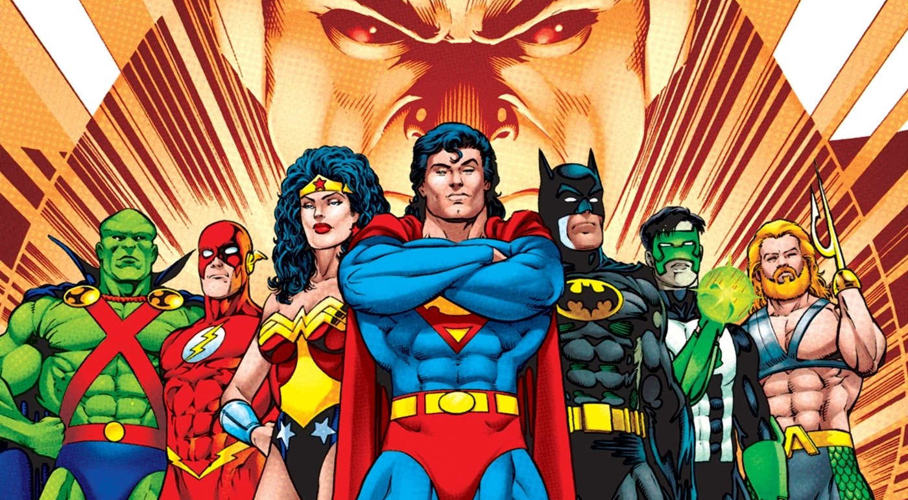

Liga da Justiça
A origem da Liga da Justiça remonta à sua primeira aparição nas histórias em quadrinhos da DC Comics, em 1960. A equipe foi criada por Gardner Fox, um escritor prolífico de quadrinhos, e foi introduzida na edição #28 da revista "The Brave and the Bold", publicada em 1960.
Na história "The Mightiest Team in the World!" (A Equipe Mais Poderosa do Mundo, em tradução livre), a Liga da Justiça foi formada por meio de um encontro casual entre os heróis Superman, Batman, Mulher-Maravilha, Flash (Barry Allen), Lanterna Verde (Hal Jordan), Aquaman e Caçador de Marte (J'onn J'onzz). Esses heróis se uniram para enfrentar uma ameaça alienígena chamada Starro, o Conquistador, que estava invadindo a Terra.
Os heróis decidiram se unir como uma equipe para combater ameaças maiores e proteger o mundo. Eles estabeleceram sua base de operações na Sala da Justiça, uma sede em forma de disco voador localizada em um satélite em órbita da Terra. A Liga da Justiça rapidamente se tornou um sucesso, e suas aventuras em conjunto cativaram os fãs de quadrinhos, levando a inúmeras histórias emocionantes e crossovers com outros personagens do universo DC ao longo dos anos.
Desde então, a formação e a história da Liga da Justiça têm evoluído, com diferentes membros se juntando e saindo da equipe, e várias iterações e reinicializações da equipe ocorrendo em várias séries de quadrinhos, desenhos animados, filmes e outras mídias. No entanto, sua origem como uma equipe de super-heróis poderosos unidos em prol da justiça e da proteção do mundo contra ameaças perigosas ainda é uma parte fundamental da mitologia da Liga da Justiça.
